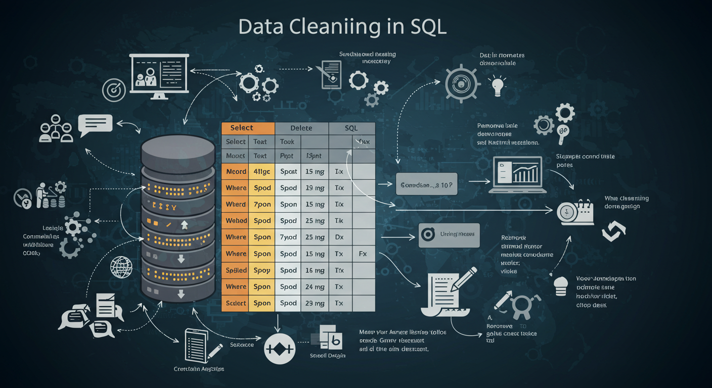

DATA CLEANING IN SQL "Cyclistic bike-share"
In this project, I utilized SQL Server (PostgreSQL) to work with the Cyclistic bike-share dataset. I began by importing the raw data into the database environment and performed thorough data cleaning, including the removal of duplicate entries and irrelevant records. Following this, I conducted key calculations to prepare the data for visualization.

DATA VISUALIZATION IN TABLEAU "Cyclistic bike-share"
I visualized the cleaned Cyclistic bike-share dataset in Tableau to discover key insights such as user patterns, ride frequency, and membership trends, supporting actionable insights for business decisions.
DATA CLEANING AND ANALYSIS IN SQL "ecommerce_dataset"
I performed both data cleaning and data analysis on the eCommerce dataset. I cleaned and enriched the data by removing duplicates, creating new calculated fields, standardizing formats, and preparing it for deeper analysis. Then, I explored sales trends, top-performing products, country-wise rankings, and pricing behavior to generate actionable insights.
DATA VISUALIZATION IN TABLEAU "ecommerce_dataset"
The eCommerce dataset was visualized using Tableau to uncover key business insights.
The visualizations revealed the Following; Top-selling products,sales trends,pricing strategies across countries and Best-selling products by country .